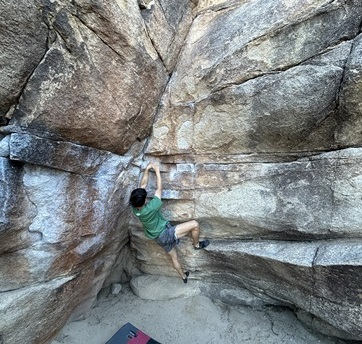
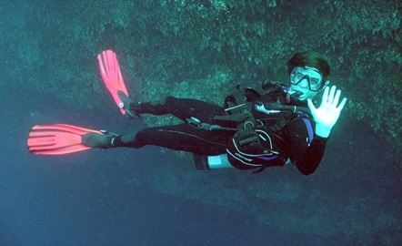
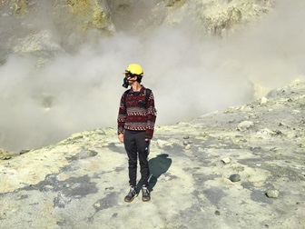

About Me

Current Work! 🚀
Heat-Health Early Warning System: I am currently working on a project that combines machine learning-based sub-seasonal forecasting with health impact modeling to improve heat-wave warnings for vulnerable communities. Stay tuned for updates!
Interests and Activities
Beyond my academic pursuits, I am deeply involved in various activities related to healthcare and the environment.
- Healthcare: I am a nationally and Texas state certified NREMT. I trained as an EMT during my free time while working towards my Ph.D. I completed clinical shadowing at multiple ERs in Austin and with American Medical Response. I have also volunteered with Longhorn EMS.
- Mental Health Advocacy: I have volunteered with support groups in Austin through the National Alliance on Mental Illness (NAMI) Central Texas.
I have many other hobbies as well...
-
Rock Climbing: I'm belay certified and enjoy bouldering and sport climbing.
Image: Near the crux of the "Gunsmoke" traverse in Joshua Tree National Park.

-
Scuba Diving: I'm an SSI certified Advanced Open Water Diver with >80 logged dives.
Image: Somewhere in the Blue Hole, Belize.

-
Traveling: I've traveled to all seven continents, and studied or researched on five of them.
Image: Whakaari volcanic island in New Zealand before its eruption in 2019.

Publications
- (In preparation) An early warning heat-health impact model using sub-seasonal forecasting - 2025
- (In preparation) An hybrid machine learning-dynamical model for extended heat wave forecast - 2025
- (In review) Decoding sub-seasonal predictors of extreme heat with interpretable machine learning - 2025
- Accelerated soil drying linked to increasing evaporative demand in wet regions - 2023
- Using machine learning to understand microgeographic determinants of the Zika vector, Aedes aegypti - 2022
- A bellweather for climate change and disability: educational needs of rehabilitation professionals regarding disasters and spinal cord injuries - 2019
- Effects of climate on dental mesowear of extant koalas and two broadly distributed kangaroos throughout their geographic range - 2019
- Assessing the ability of the Sacral Autonomic Standards to document bladder and bowel function based upon the Asia Impairment Scale - 2018
Teaching
- GEO302C: Climate, Past, Present, and Future - I designed and led lab experiments and assignments for a climate change course, integrating computer simulations, classroom demonstrations, and lectures to engage and inform non-major undergraduates about topics in modern climate science and paleoclimate.
- GEO110T: Math Tutorial - I designed and delivered curricula for three sections of a calculus tutorial, connecting mathematical concepts to geoscience topics like climate, hydrology, and geology. I independently managed all course duties, including syllabus creation, grading, and student support, while ensuring consistent classroom expectations.
CV
Download my CV to learn more.